Tutorial
Getting Started
Allow Photo Library Access
When you first launch VideoSorter, the app will ask for photo library permission. Choose "Allow Full Access" for the best experience. Only metadata such as date and duration is read — no videos are uploaded anywhere.
Create Your First Directory
Tap the + button in the top-right corner. Choose "Rule Match" to set up automatic classification rules, or "Manual Select" to hand-pick videos yourself.
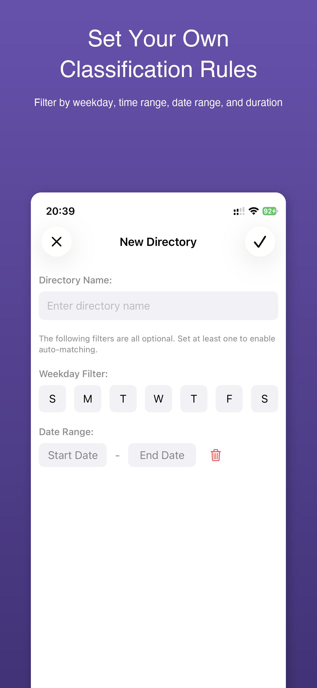
Set Classification Rules
In Rule-based mode, name the directory, then turn on the conditions you need: Weekdays, Time of Day (Same every day or Per day), Date Range, and Duration. Tap a time or date to pick it. The preview at the bottom shows which videos match as you edit. At least one rule is required to save.
Import & Classify Videos
When you save the directory, matching videos from your photo library are sorted into it automatically. After that, every time you open the app new videos are synced and sorted, and a notice shows how many were found for each directory.
Browse Videos by Directory
Tap any directory to see its videos. You can play videos, pin favorites, or remove videos from the directory as needed.
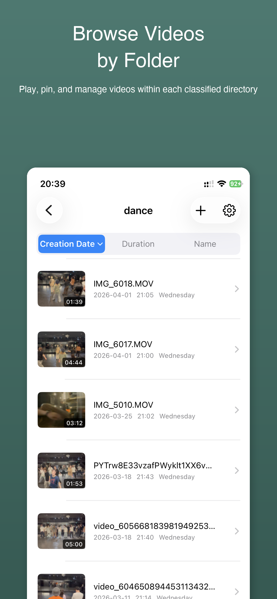
Unclassified Videos
Videos that don't match any of your rules are placed in the "Unclassified" folder. You can review them there and manually move them to the appropriate directory.
Settings & Management
Open Settings
Tap the gear icon in the top-left corner to open Settings. From here you can sync, remove ads, change the language, and open the help pages.
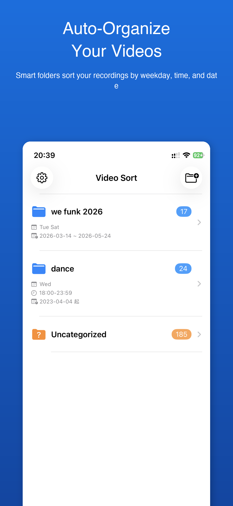
Sync & Classify
Syncing happens automatically each time you open the app. If you change rules or want to re-sort everything, tap Sync & Classify in Settings to re-import and re-classify all videos in your photo library.
Edit a Directory
Open a directory and tap the gear icon in the top-right corner to change its name or rules. On the main screen, swipe a directory left to delete it; its videos become Uncategorized.
Manual Video Adding
Inside any directory, tap the + button to manually pick videos from your photo library and add them to that directory.
Change App Language
Go to your device's Settings > VideoSorter to change the app language. The app supports 6 languages: English, Japanese, Simplified Chinese, Traditional Chinese, Spanish, and Korean.
Remove Ads
In Settings, choose Remove Ads and pick a monthly or yearly plan to hide all banner, launch, and in-list ads. Use Restore Purchases on a new device, and Manage Subscription to cancel anytime.
Tip: New videos are picked up automatically whenever you open the app. Just record, open VideoSorter, and they are already in the right directory.
はじめに
写真ライブラリへのアクセスを許可
動画整理を初めて起動すると、写真ライブラリへのアクセス許可を求められます。「フルアクセスを許可」を選択してください。読み取るのは日付や再生時間などのメタデータのみで、動画がアップロードされることはありません。
最初のディレクトリを作成
右上の「+」ボタンをタップします。「ルールマッチ」で自動分類ルールを設定するか、「手動選択」で動画を自分で選ぶことができます。
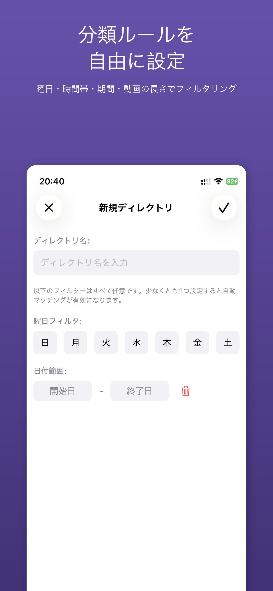
分類ルールの設定
ルールマッチでは、ディレクトリ名を付けてから必要な条件をオンにします：曜日、時間帯（毎日同じ／曜日ごと）、日付範囲、再生時間。時刻や日付はタップして選べます。画面下のプレビューに、条件にマッチする動画がリアルタイムで表示されます。保存するには少なくとも1つの条件が必要です。
動画の取り込みと分類
ディレクトリを保存すると、写真ライブラリの中で条件に合う動画が自動的に振り分けられます。以降はアプリを開くたびに新しい動画が自動で同期・分類され、ディレクトリごとに見つかった件数がお知らせで表示されます。
ディレクトリごとに動画を閲覧
ディレクトリをタップすると、その中の動画一覧が表示されます。動画の再生、お気に入りのピン留め、ディレクトリからの削除ができます。
未分類の動画
どのルールにも一致しない動画は「未分類」フォルダに入ります。そこで確認し、手動で適切なディレクトリに移動できます。
設定と管理
設定を開く
左上の歯車アイコンをタップして設定を開きます。同期、広告削除、言語設定、ヘルプにアクセスできます。
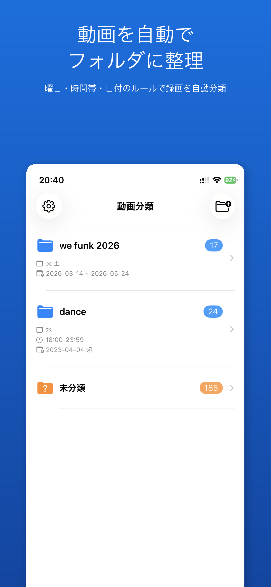
同期して分類
同期はアプリを開くたびに自動で行われます。条件を変えたときや全体を振り分け直したいときは、設定の「同期して分類」で写真ライブラリの全動画を再取り込み・再分類できます。
ディレクトリの編集
ディレクトリを開いて右上の歯車アイコンをタップすると、名前や条件を変更できます。メイン画面でディレクトリを左にスワイプすると削除でき、中の動画は未分類に戻ります。
手動で動画を追加
ディレクトリ内で「+」ボタンをタップすると、写真ライブラリから動画を手動で選んで追加できます。
アプリの言語を変更
端末の設定 > 動画整理からアプリの言語を変更できます。英語・日本語・簡体字中国語・繁体字中国語・スペイン語・韓国語の6言語に対応しています。
広告を非表示にする
設定の「広告削除」から月額または年額プランを選ぶと、バナー・起動時・リスト内の広告がすべて非表示になります。機種変更したときは「購入を復元」、解約は「サブスクリプションを管理」からいつでもできます。
便利な機能：アプリを開くだけで新しい動画が自動で取り込まれます。録画したら動画整理を開くだけで、もう正しいディレクトリに入っています。
开始使用
允许访问照片图库
首次启动视频整理时，应用会请求照片图库访问权限。请选择"允许完全访问"以获得最佳体验。应用仅读取日期、时长等元数据，不会上传任何视频。
创建第一个目录
点击右上角的"+"按钮。选择"规则匹配"来设置自动分类规则，或选择"手动选择"来自行挑选视频。

设置分类规则
在「规则匹配」模式下，先为目录命名，再打开需要的条件：星期、时间段（每天相同／每天不同）、日期范围和时长。点击时间或日期即可选择。底部预览会实时显示匹配到的视频。至少需要设置一项规则才能保存。
导入并分类视频
保存目录后，相册中符合条件的视频会自动归入该目录。之后每次打开 App 都会自动同步并分类新视频，并提示每个目录新发现了多少个视频。
按目录浏览视频
点击任意目录即可查看其中的视频。你可以播放视频、收藏喜欢的视频，或从目录中移除视频。

未分类的视频
不匹配任何规则的视频会被放入"未分类"文件夹。你可以在那里查看并手动将它们移到合适的目录。
设置与管理
打开设置
点击左上角的齿轮图标打开设置，可以进行同步、去广告、语言设置和查看帮助。

同步并分类
每次打开 App 都会自动同步。修改了规则或想重新整理全部视频时，可以在设置中点击「同步并分类」，重新导入并分类相册中的所有视频。
编辑目录
打开目录后点击右上角的齿轮图标，可以修改名称和规则。在主界面将目录向左滑动即可删除，其中的视频会变为未分类。
手动添加视频
在任意目录内，点击"+"按钮即可从照片图库中手动选择视频并添加到该目录。
切换应用语言
前往系统设置 > 视频整理即可更改应用语言。支持英语、日语、简体中文、繁体中文、西班牙语和韩语共6种语言。
去除广告
在设置中选择「去广告」，再选择月付或年付方案，即可隐藏横幅、开屏和列表中的所有广告。更换设备时使用「恢复购买」，也可随时在「管理订阅」中取消。
小贴士：只要打开 App，新视频就会自动导入。录完视频后打开视频整理，它们已经在正确的目录里了。
開始使用
允許存取照片圖庫
首次啟動影片整理時，應用程式會請求照片圖庫存取權限。請選擇「允許完整存取」以獲得最佳體驗。應用程式僅讀取日期、時長等中繼資料，不會上傳任何影片。
建立第一個目錄
點擊右上角的「+」按鈕。選擇「規則配對」來設定自動分類規則，或選擇「手動選擇」來自行挑選影片。
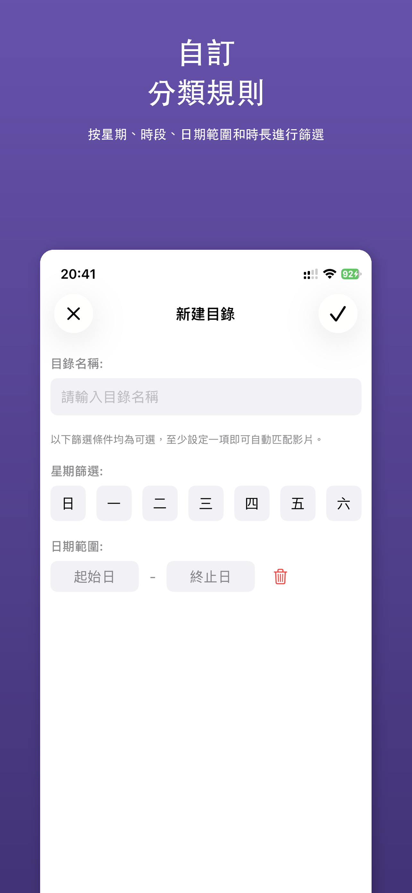
設定分類規則
在「規則匹配」模式下，先為目錄命名，再開啟需要的條件：星期、時間段（每天相同／每天不同）、日期範圍和時長。點擊時間或日期即可選擇。底部預覽會即時顯示符合條件的影片。至少需要設定一項規則才能儲存。
匯入並分類影片
儲存目錄後，照片圖庫中符合條件的影片會自動歸入該目錄。之後每次開啟 App 都會自動同步並分類新影片，並提示每個目錄新發現了多少部影片。
依目錄瀏覽影片
點擊任意目錄即可查看其中的影片。你可以播放影片、釘選收藏喜歡的影片，或從目錄中移除影片。

未分類的影片
不符合任何規則的影片會被放入「未分類」資料夾。你可以在那裡查看並手動將它們移到合適的目錄。
設定與管理
開啟設定
點擊左上角的齒輪圖示開啟設定，可以進行同步、去廣告、語言設定和查看幫助。

同步並分類
每次開啟 App 都會自動同步。修改了規則或想重新整理全部影片時，可以在設定中點擊「同步並分類」，重新匯入並分類照片圖庫中的所有影片。
編輯目錄
開啟目錄後點擊右上角的齒輪圖示，可以修改名稱和規則。在主畫面將目錄向左滑動即可刪除，其中的影片會變為未分類。
手動新增影片
在任意目錄內，點擊「+」按鈕即可從照片圖庫中手動選擇影片並新增到該目錄。
切換應用程式語言
前往系統設定 > 影片整理即可更改應用程式語言。支援英語、日語、簡體中文、繁體中文、西班牙語和韓語共6種語言。
移除廣告
在設定中選擇「去廣告」，再選擇月付或年付方案，即可隱藏橫幅、開屏和列表中的所有廣告。更換裝置時使用「恢復購買」，也可隨時在「管理訂閱」中取消。
小提示：只要開啟 App，新影片就會自動匯入。錄完影片後開啟影片整理，它們已經在正確的目錄裡了。
Primeros pasos
Permitir acceso a la fototeca
Al abrir VideoSorter por primera vez, la app solicitará permiso para acceder a tu fototeca. Elige "Permitir acceso completo" para obtener la mejor experiencia. Solo se leen metadatos como fecha y duración; ningún video se sube a ningún servidor.
Crear tu primer directorio
Toca el botón + en la esquina superior derecha. Elige "Coincidencia de reglas" para configurar reglas de clasificación automática, o "Selección manual" para elegir videos tú mismo.
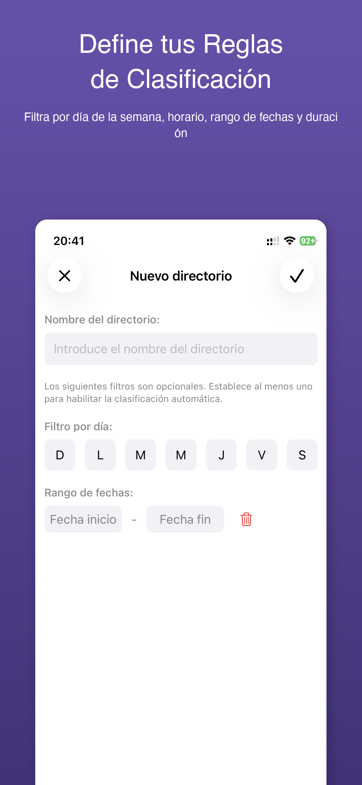
Configurar reglas de clasificación
En el modo Por reglas, ponle nombre al directorio y activa las condiciones que necesites: Días de la semana, Franja horaria (Igual cada día o Por día), Rango de fechas y Duración. Toca una hora o fecha para elegirla. La vista previa de abajo muestra en tiempo real qué videos coinciden. Se necesita al menos una regla para guardar.
Importar y clasificar videos
Al guardar el directorio, los videos de tu fototeca que cumplen las condiciones se clasifican en él automáticamente. Después, cada vez que abres la app los videos nuevos se sincronizan y clasifican, y un aviso muestra cuántos se encontraron por directorio.
Explorar videos por directorio
Toca cualquier directorio para ver sus videos. Puedes reproducir videos, fijar favoritos o eliminar videos del directorio según necesites.
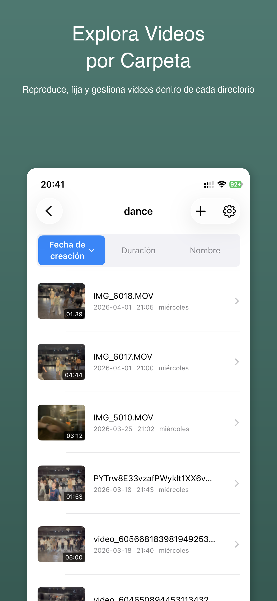
Videos sin clasificar
Los videos que no coinciden con ninguna regla se colocan en la carpeta "Sin clasificar". Puedes revisarlos allí y moverlos manualmente al directorio adecuado.
Ajustes y gestión
Abrir Ajustes
Toca el icono de engranaje en la esquina superior izquierda para abrir Ajustes. Desde ahí puedes sincronizar, quitar anuncios, cambiar el idioma y abrir la ayuda.
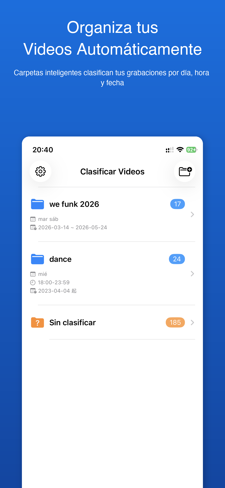
Sincronizar y clasificar
La sincronización se hace automáticamente cada vez que abres la app. Si cambias las reglas o quieres reorganizarlo todo, toca Sincronizar y clasificar en Ajustes para volver a importar y clasificar todos los videos de tu fototeca.
Editar un directorio
Abre un directorio y toca el icono de engranaje arriba a la derecha para cambiar su nombre o sus reglas. En la pantalla principal, desliza un directorio a la izquierda para eliminarlo; sus videos pasan a Sin clasificar.
Añadir videos manualmente
Dentro de cualquier directorio, toca el botón + para seleccionar videos manualmente desde tu fototeca y añadirlos a ese directorio.
Cambiar el idioma de la app
Ve a Ajustes del sistema > VideoSorter para cambiar el idioma de la app. Se admiten 6 idiomas: inglés, japonés, chino simplificado, chino tradicional, español y coreano.
Quitar anuncios
En Ajustes, elige Quitar anuncios y un plan mensual o anual para ocultar todos los anuncios (banner, al abrir y en las listas). En un dispositivo nuevo usa Restaurar compras, y cancela cuando quieras desde Gestionar suscripción.
Consejo: Los videos nuevos se detectan automáticamente cada vez que abres la app: graba, abre VideoSorter y ya estarán en el directorio correcto.
시작하기
사진 보관함 접근 허용
동영상 분류를 처음 실행하면 사진 보관함 접근 권한을 요청합니다. "전체 접근 허용"을 선택하면 최상의 환경을 이용할 수 있습니다. 날짜, 재생 시간 등 메타데이터만 읽으며, 동영상이 업로드되는 일은 없습니다.
첫 번째 디렉토리 만들기
오른쪽 상단의 "+" 버튼을 탭하세요. "규칙 매칭"을 선택하면 자동 분류 규칙을 설정할 수 있고, "수동 선택"을 선택하면 직접 동영상을 골라 넣을 수 있습니다.
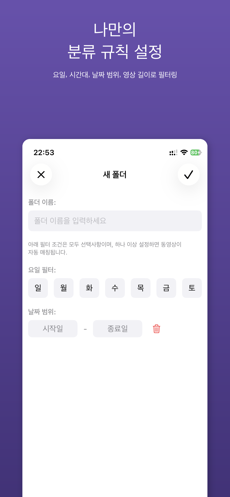
분류 규칙 설정
규칙 매칭 모드에서 디렉토리 이름을 정한 뒤 필요한 조건을 켭니다: 요일, 시간대(매일 동일 또는 요일별), 날짜 범위, 길이. 시간이나 날짜를 탭해서 선택할 수 있습니다. 아래 미리보기에 일치하는 동영상이 실시간으로 표시됩니다. 저장하려면 규칙이 하나 이상 필요합니다.
동영상 가져오기 및 분류
디렉토리를 저장하면 사진 보관함에서 조건에 맞는 동영상이 자동으로 분류됩니다. 이후 앱을 열 때마다 새 동영상이 자동으로 동기화·분류되며, 디렉토리별로 찾은 개수를 알림으로 보여 줍니다.
디렉토리별 동영상 탐색
디렉토리를 탭하면 해당 동영상 목록을 볼 수 있습니다. 동영상을 재생하거나 즐겨찾기를 고정하거나 디렉토리에서 제거할 수 있습니다.
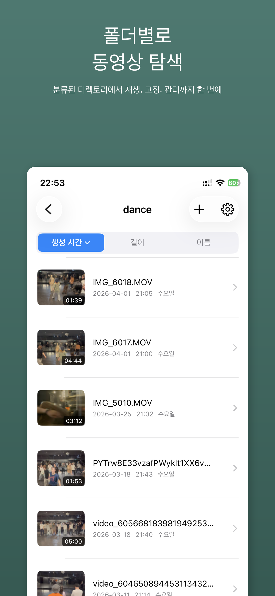
미분류 동영상
어떤 규칙에도 해당하지 않는 동영상은 "미분류" 폴더에 들어갑니다. 거기서 확인한 후 수동으로 적절한 디렉토리로 이동할 수 있습니다.
설정 및 관리
설정 열기
왼쪽 상단의 톱니바퀴 아이콘을 탭하여 설정을 엽니다. 동기화, 광고 제거, 언어 설정, 도움말을 이용할 수 있습니다.

동기화 및 분류
동기화는 앱을 열 때마다 자동으로 진행됩니다. 규칙을 바꿨거나 전체를 다시 정리하고 싶다면 설정에서 동기화 및 분류를 탭해 사진 보관함의 모든 동영상을 다시 가져와 분류하세요.
디렉토리 편집
디렉토리를 열고 오른쪽 상단의 톱니바퀴 아이콘을 탭하면 이름과 규칙을 변경할 수 있습니다. 메인 화면에서 디렉토리를 왼쪽으로 스와이프하면 삭제할 수 있으며, 안의 동영상은 미분류로 돌아갑니다.
수동으로 동영상 추가
디렉토리 안에서 "+" 버튼을 탭하면 사진 보관함에서 동영상을 직접 골라 해당 디렉토리에 추가할 수 있습니다.
앱 언어 변경
기기의 설정 > 동영상 분류에서 앱 언어를 변경할 수 있습니다. 영어, 일본어, 중국어 간체, 중국어 번체, 스페인어, 한국어 총 6개 언어를 지원합니다.
광고 제거
설정에서 광고 제거를 선택하고 월간 또는 연간 요금제를 고르면 배너, 실행 시, 목록 내 광고가 모두 사라집니다. 새 기기에서는 구매 복원을 탭하고, 해지는 구독 관리에서 언제든지 할 수 있습니다.
팁: 앱을 열기만 하면 새 동영상이 자동으로 가져와집니다. 녹화한 뒤 앱을 열면 이미 올바른 디렉토리에 들어가 있습니다.